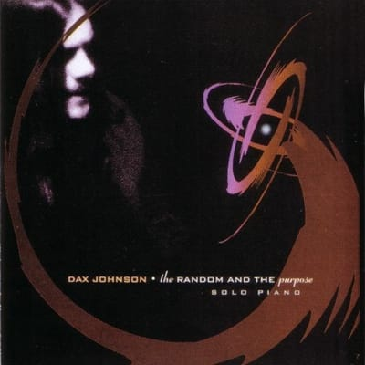

Прикольная лампа.
Лампа
Fail better

Женщина в ванной

Начал уже жалеть, что ванная не моя. Так бы нарисовал бы себе женщину тоже. Автор.
Ludovico Einaudi - Reverie
Видео тоже очень клевое :)
Jun Kumaori

Забавные японские картинки.
Fujiya and Miyagi - Ventriloquizzing (2011)

Охрененные совершенно англичане. Очень рекомендую!
Le Voyage dans la lune (1902)
Охуенный какой трип!
Giant Polaroids

Dax Johnson - The Random and the Purpose (2000)

Очень клевый альбом. Вот на пробу на саундклауде или вот на трубе :) Непременно брошу его в ящик, но чутка попозже :)